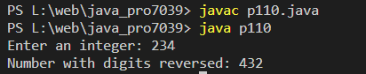

Write a Java program that prompts the user to input an integer and then outputs the number with the digits reversed order.
Code:-
import java.util.Scanner;
public class p110 {
public static void main(String[] args) {
Scanner scanner = new Scanner(System.in);
System.out.print("Enter an integer: ");
int number = scanner.nextInt();
int reversedNumber = 0;
while (number != 0) {
int digit = number % 10; // Get the last digit
reversedNumber = reversedNumber * 10 + digit;
number = number / 10; // Remove the last digit
}
System.out.println("Number with digits reversed: " + reversedNumber);
}
}
Output:-
